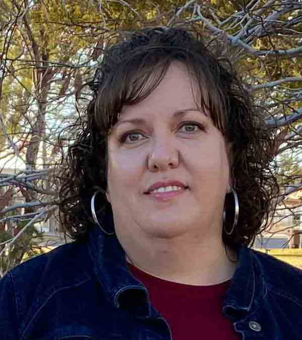

Shayla Darlene Anderson | WDD 130
Hello, there! I am Shayla Anderson from Centerfield, Utah. I work as an Administrative Secretary for the Utah Department of Corrections in their substance use treatment programs. In my spare time, I enjoy knitting, reading, and am often caught singing at work and home.